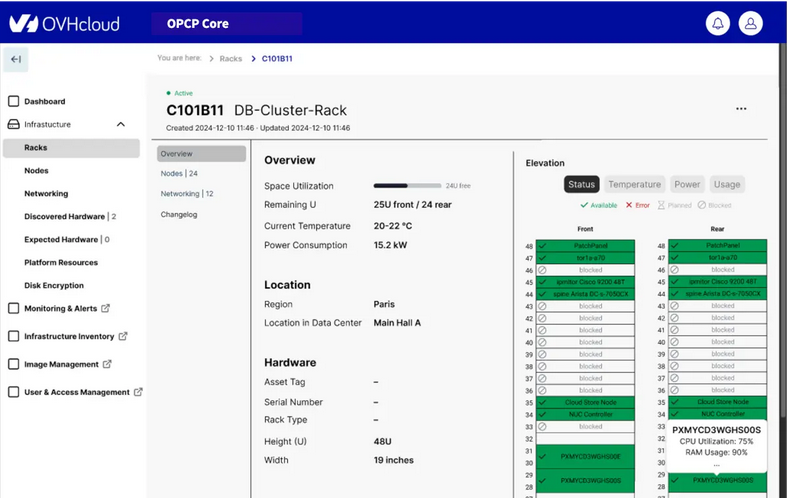

Introduction to OPCP Core OpenStack First Steps
Welcome to SkillHub, the hands-on training companion for the opcp-openstack-first-steps project. This course walks you through the fundamentals of OpenStack — from your first authenticated API call to creating instances, networks, volumes, and LACP bond configurations.

What You Will Learn
By the end of this training path you will be comfortable with:
- OpenStack core concepts — projects, users, services, and endpoints
- User Management — creating users in Keycloak and assigning roles
- Authentication — authenticating via Keystone using application credentials
- Networking — creating networks, subnets, and routers with Neutron
- Storage — creating and attaching volumes with Cinder
- Compute — launching and managing instances with Nova
- LACP Configuration — bonding multiple network interfaces for bandwidth and redundancy
Prerequisites
- An OVHcloud Public Cloud project with API access
- Basic familiarity with a terminal / command line
- Python 3.9+ installed
- Docker installed (for the lab container environment)
Quick Start — Validate Your Setup
Run these commands to confirm your environment is ready:
# Verify the OpenStack CLI is installed
openstack --version
# Check that your credentials are configured
env | grep OS_
# Test authentication by issuing a token
openstack token issue